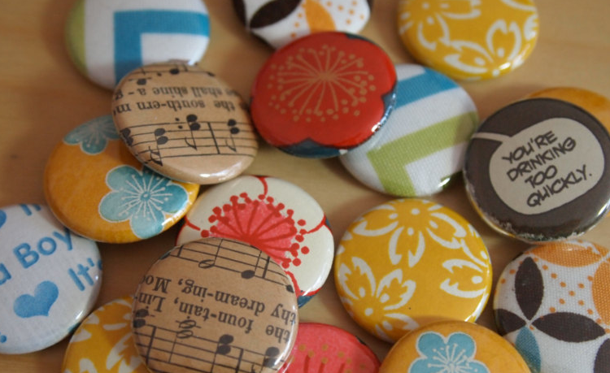

What is a pinback button?

According to Wikipedia: A pin-back button or pinback button, pin button, button badge or simply pin-back or badge, is a button or badge that can be temporarily fastened to the surface of a garment using a safety pin, or a pin formed from wire, a clutch or other mechanism. This fastening mechanism is anchored to the back side of a button-shaped metal disk, either flat or concave, which leaves an area on the front of the button to carry an image or printed message. The word is commonly associated with a campaign button used in the United States and abroad during a political campaign. The first design for a pin-back button in the United States was patented in 1896, and contemporary buttons have many of the same design features.
Designing Pinback Buttons

I like designing buttons using a variety of materials that I personally enjoy. I love to collect old books & maps, so I prefer to make upcycled designs for my buttons using these books. It does destroy books to do this, but it also makes a single book a small, bright wearable item for hundreds of people.
You can also use any manner of digital illustration to make round shapes. I use Adobe Illustrator to design my printed buttons. My designed buttons are primarily sold through my Etsy store.